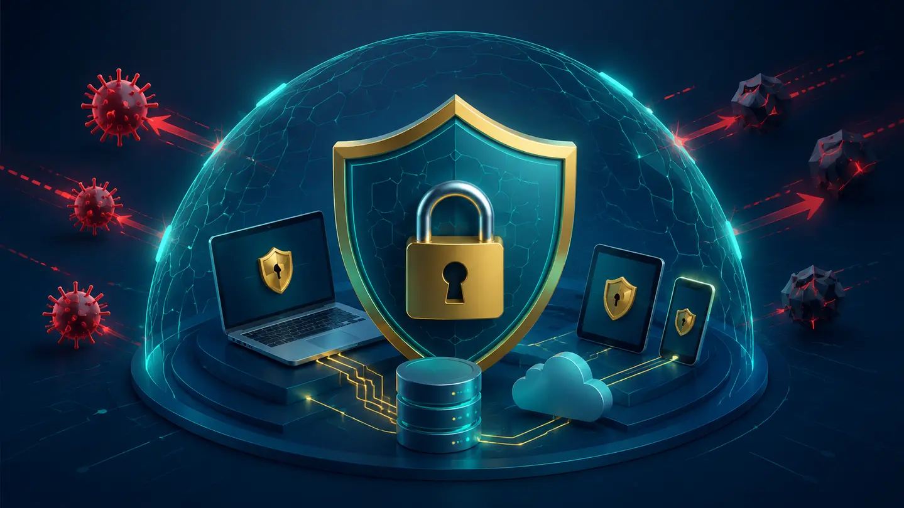

Segurança digital não depende apenas de instalar um antivírus. Ela envolve senhas, atualizações, backups, configurações, atenção a mensagens e cuidado com informações pessoais. A maioria das pessoas não precisa se tornar especialista, mas precisa criar hábitos que reduzam riscos.
Os três objetivos clássicos da segurança da informação são confidencialidade, integridade e disponibilidade: apenas pessoas autorizadas acessam os dados, as informações não são alteradas indevidamente e os serviços continuam disponíveis quando necessários.
1. Use senhas fortes e diferentes
Reutilizar a mesma senha transforma um vazamento isolado em risco para várias contas. Prefira frases longas ou senhas aleatórias e utilize um gerenciador confiável para armazená-las. Não inclua nome, aniversário ou sequências fáceis.
2. Ative a autenticação em duas etapas
Ela exige uma segunda confirmação além da senha. Aplicativos autenticadores e chaves físicas costumam oferecer proteção mais forte. Guarde os códigos de recuperação em local seguro; eles podem ser necessários se o celular for perdido.
3. Desconfie de urgência e pressão
Golpes de phishing tentam provocar medo, curiosidade ou pressa: conta bloqueada, prêmio inesperado, cobrança urgente ou pedido de um conhecido. Antes de clicar, confira o endereço, o remetente e a linguagem. Quando houver dúvida, acesse o serviço pelo aplicativo oficial ou digite o endereço conhecido no navegador.
4. Mantenha sistemas e aplicativos atualizados
Atualizações corrigem vulnerabilidades exploradas por criminosos. Ative atualizações automáticas quando possível e não esqueça navegador, aplicativos, sistema operacional e roteador.
5. Faça backups que possam ser restaurados
Mantenha cópias importantes em locais diferentes. Uma estratégia simples pode incluir o arquivo original, uma cópia em dispositivo separado e outra em serviço de nuvem. Verifique periodicamente se os arquivos realmente abrem.
6. Proteja celular e computador
Use bloqueio de tela, criptografia disponível, localização remota e proteção contra tentativas repetidas. Não instale programas de fontes desconhecidas. Em redes públicas, evite tarefas sensíveis quando não houver confiança no ambiente.
7. Compartilhe o mínimo necessário
Fotos de documentos, códigos de confirmação, localização, rotina e dados familiares podem ser usados em fraudes e engenharia social. Antes de publicar ou enviar algo, pense se aquela informação realmente precisa ser compartilhada.
O que fazer se uma conta for invadida?
- Troque a senha usando um dispositivo confiável.
- Encerre sessões desconhecidas.
- Ative ou refaça a autenticação em duas etapas.
- Confira e-mail e telefone de recuperação.
- Avise contatos quando houver risco de golpes em seu nome.
- Registre informações importantes e procure os canais oficiais do serviço.
Revisão prática de segurança
Escolha três contas importantes. Verifique senha exclusiva, autenticação em duas etapas, sessões abertas e métodos de recuperação. Depois confira se seus arquivos essenciais possuem backup.
Perguntas frequentes
Antivírus ainda é necessário?
Proteção contra malware continua importante, mas deve fazer parte de um conjunto de medidas. Atualizações, backup e comportamento seguro são igualmente necessários.
Uma senha complicada é suficiente?
Não. Ela precisa ser exclusiva, longa e acompanhada de autenticação em duas etapas sempre que possível.
Referências bibliográficas
Obras reconhecidas que fundamentam e aprofundam os conceitos apresentados neste artigo.
- STALLINGS, William; BROWN, Lawrie. Computer Security: Principles and Practice. 5. ed. Pearson, 2023.
- ANDERSON, Ross. Security Engineering. 3. ed. Wiley, 2020.